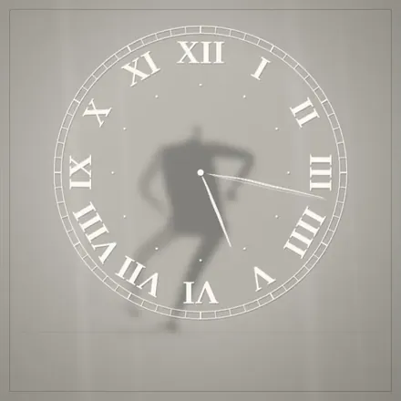
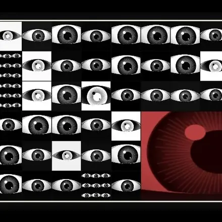
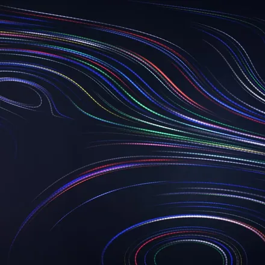
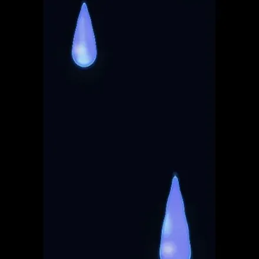
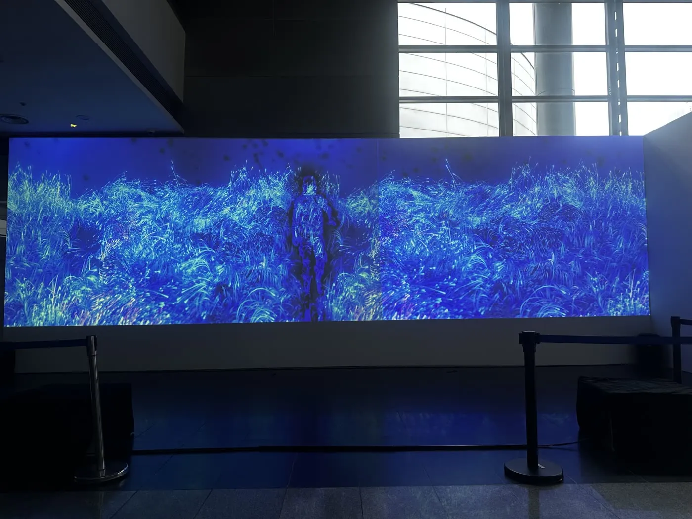
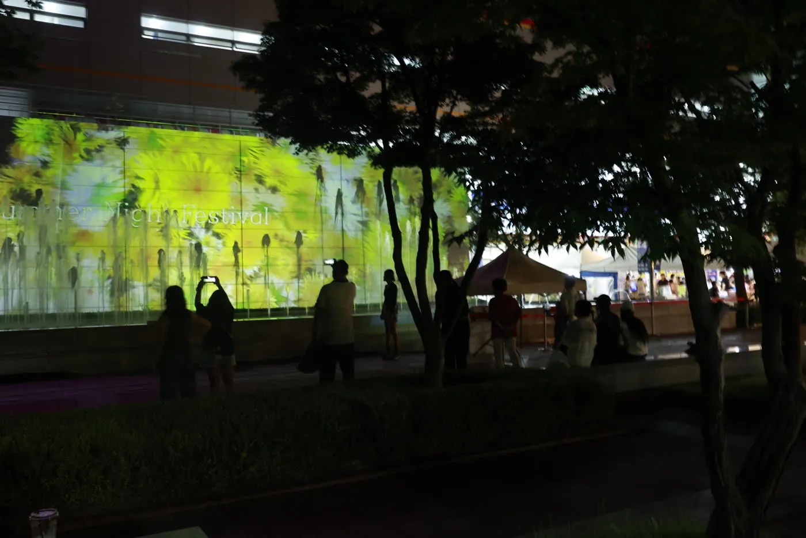
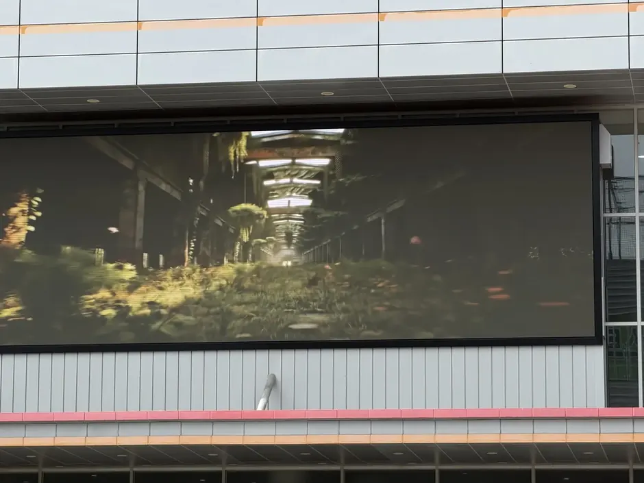
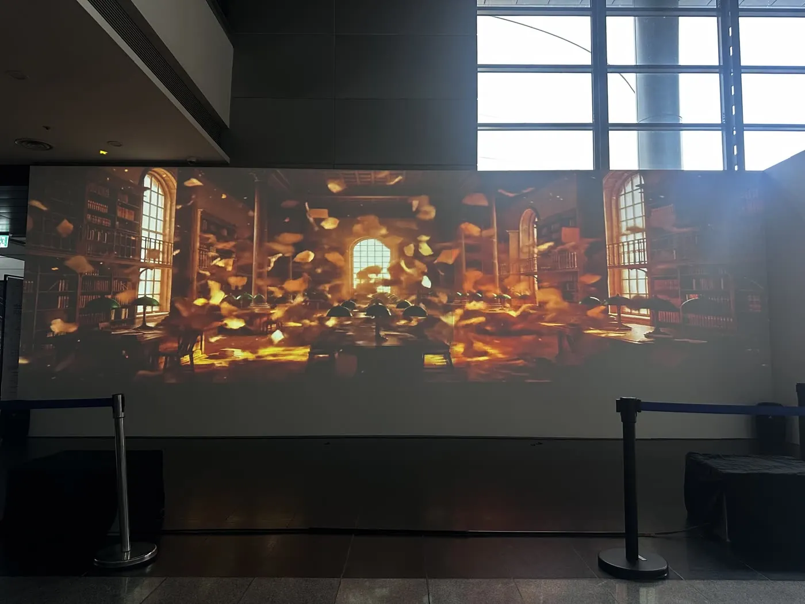
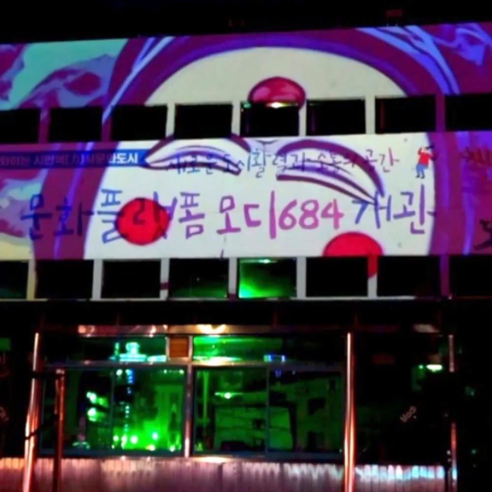
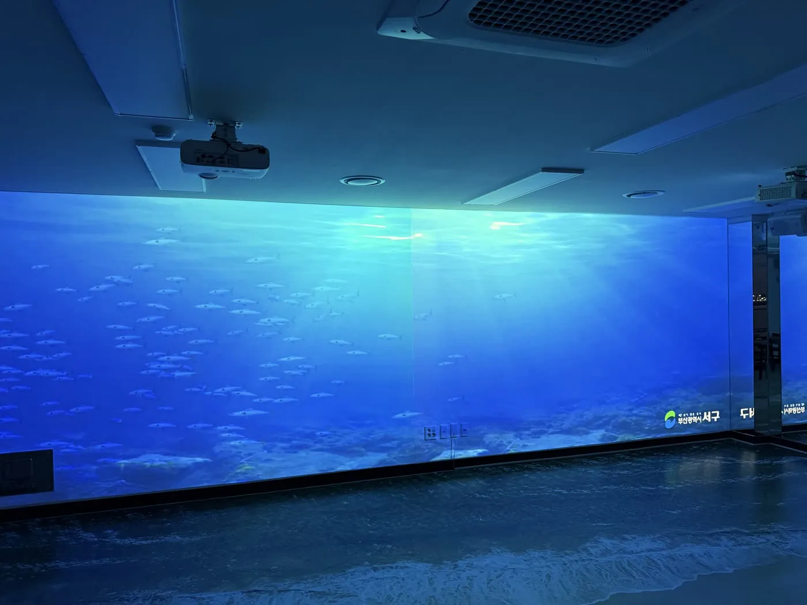

직접 만듭니다
제작기에서 분위기와 색, 스타일을 고르면 화면이 만들어집니다. 영상 편집을 배우실 필요가 없습니다.
- 분위기 프리셋 12종
- 색 팔레트 16종 (오방·단청 포함)
- 스타일 엔진 14종
지금 돌아가는 화면




모두 저희가 코드로 만든 작품입니다. 눌러보시면 실제로 돌아갑니다. 현장 화면 비율과 해상도에 맞춰 다시 출력해 드립니다.
대구 실시간 정보를 불러오는 중
미디어아트 제작 공정을 AI로 옮긴 미디어아트 AX 기업입니다.
미디어파사드 콘텐츠 제작 · LED 패널 · 전광판 설치 · 빔프로젝터 미디어파사드
여기에 더해, 직접 만드신 영상을 사이니지 패널 규격에 맞춰 고화질로 렌더링해 드립니다.
대구 · 부산 · 경북에서 한 계약으로 끝내는 여성기업입니다.
Make & Render
고객이 제작기에서 직접 화면을 만듭니다. 만든 화면은 5초짜리 워터마크 샘플로 바로 확인할 수 있고, 확정하시면 그 사이니지 패널 규격에 맞춰 고화질로 렌더링해 파일로 보내드립니다. 작업은 평일 24시간 이내에 끝냅니다.
제작기에서 분위기와 색, 스타일을 고르면 화면이 만들어집니다. 영상 편집을 배우실 필요가 없습니다.
만든 화면은 워터마크가 들어간 5초짜리 샘플로 바로 받아 보실 수 있습니다. 실제 패널에 걸어 보고 결정하세요.
확정하시면 그 사이니지 패널의 실제 픽셀 규격으로 고화질 렌더링해 파일로 보내드립니다.
휴일과 공휴일에는 작업하지 않습니다. 금요일 오후에 확정된 건은 다음 영업일에 나갑니다.
Selected Works
공공기관과 문화시설 현장에 미디어파사드를 설치하고 LED 패널 미디어아트를 상영한 작업입니다. 지금까지 약 40편을 납품했습니다.








지금까지 미디어아트 영상 약 40편을 공공기관·문화시설 현장에 납품했습니다. 입찰·수의계약용 실적증명서는 문의 시 보내드립니다.
What We Do
기획·제작만 하고 빠지지 않습니다. 콘텐츠 제작과 화면 설치가 같은 계약 안에 있습니다.
미디어아트를 영상 편집이 아니라 코드로 만듭니다. 그래서 같은 작품을 현장 화면 비율과 해상도에 맞춰 다시 출력할 수 있습니다.
시안 3종이 요청 후 1주일 이내에 나옵니다. 영상 외주 제작이 통상 1개월 이상 걸리는 것과 비교되는 지점입니다.
로비 미디어월, 건물 외벽 전광판, 세로형 사이니지를 사양 산정부터 공급·설치·배선까지 직접 시공합니다.
건물 외벽과 전시장 벽면에 빔프로젝터를 설치하고 프로젝션 매핑으로 미디어파사드를 만듭니다.
공공기관이 대구 미디어파사드나 LED 전광판 설치로 발주할 때, 콘텐츠 제작과 설치 시공을 한 업체에서 처리할 수 있습니다. 여성기업 확인서와 직접생산확인증명서를 보유해 공공기관 우선구매와 중소기업자간 경쟁입찰에 바로 참여합니다. 어떤 화면에 어떤 영상이 어울리는지는 사이니지 종류별 화면 예시에서 실제 화면으로 보실 수 있습니다.
Live Public Data
공공 API에서 날씨와 대기질을 직접 받아 그립니다. 예시 영상이 아니라 지금 이 순간의 값입니다.


Inquiry Form
기관명, 사업영역, 예산 범위만 남겨주시면 검토 후 연락드립니다.